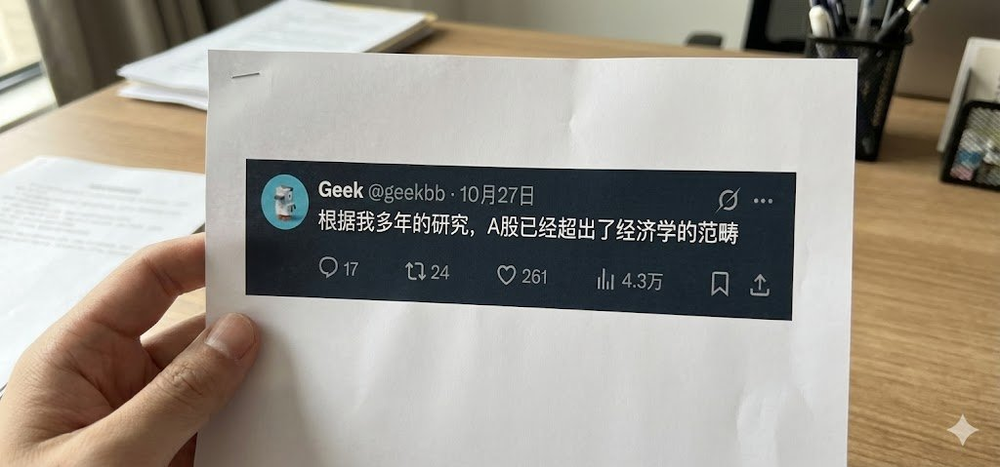

山田リョウ⛩️
@Yamada_Ryoooo
@geekbb 以后再先进一点有可能，至少取证是用录屏把帐号上的回复全部录下来，应该没那么容易

Geek
@geekbb
又一个好玩的提示词（我并没有说过这句话，是让 Nano Banana Pro 替换了10月27号的原推文）。但感觉有点细思极恐呢，晶哥不会为了冲业绩，嗯P点推友们十年前的推文，直接给人拉清单吧…… https://t.co/gFw805TZxM https://t.co/XGwc52LOpJ